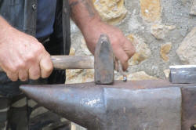

The Bridge: Adjectives
 |
| The nice rickshaw driver is asleep |
 |
There are three words in the
sentence above which are definable as adjectives. Find them and then click here. |
You should have:
nice
rickshaw
asleep
and that was none too difficult.
However, these three adjectives behave very differently as the next mini-task will show.
|
|
Try putting the
adjectives into the gaps in this sentence: The __________ driver is ___________. and then click here. |
- nice
- this adjective can go in both positions. The terms for
this are that it can be attributive (coming
directly before or after the noun) or it can be
predicative (linked to the noun with a verb like be
or appear). This is a key characteristic of some
adjectives, most in fact.
We can have, therefore:
The nice driver
and
The driver seems nice - rickshaw
- this is a form of adjective which tells us what sort of
driver he is and is called a classifier.
Classifiers cannot be predicative, they can only be used attributively. So, we allow:
the rickshaw driver
but do not allow
*the driver is rickshaw - asleep
- this falls into a special class of adjectives called the
a-series and has some
peculiarities.
The adjective can only be used predicatively, not attributively so we allow:
the driver is asleep
but not
*the asleep driver
Central or peripheral |
What we have discovered above is important because, although adjectives
are an identifiable word class and teachers often mark words on the
board with, e.g., adj., and tell learners that this or that word
is an adjective, there are different sorts of adjectives and they behave
differently.
If learners aren't told this then you can expect errors such as:
*The afraid child
*The more asleep dog
*The car is sports
and even
*The concreter wall
and so on because all these adjectives are non-central. They are
peripheral in the sense that they cannot do what central adjectives do.
- Central adjectives
- can be used predicatively and attributively, so we can have:
a beautiful house
and
the house is beautiful - can form comparatives and superlatives so we can have:
the faster car
the slowest horse
the most beautiful chocolate
the more interesting idea
etc. - allow modification with a wide range of adverbs so we can
have:
the incredibly clear water
the very old man
the exceptionally beautiful castle
etc.
- can be used predicatively and attributively, so we can have:
- Peripheral adjectives fall into a number of types:
- Classifiers
Many nouns can act as classifiers and come before the main noun to signal what sort of thing it is.
To distinguish central adjectives from classifiers, the former are often called epithets.
Classifiers:- can only be used attributively so we can have:
the sports car
the village hall
the alpine snow
but not
*the car is sports
*the hall is village
*the snow is alpine - cannot take comparative or superlative forms, so we cannot
have:
*the sportser car
*the villagest hall
*the most alpine snow
etc. - cannot be modified with adverbs, so we do not allow:
*the very sports car
*the really village hall
*the extremely alpine snow
etc.
- can only be used attributively so we can have:
- the a-series adjectives
- can only be used predicatively so we allow, e.g.:
the dog is aware of you
but not
*the aware dog - can rarely be used comparatively or superlatively, so we do
not allow:
*The dog is asleeper than the cat
although
He is more aware of the problem than her
is possible. - sometimes only allow modification with a narrow range of
adverbs so we can have:
the cat was sound asleep
the woman was acutely aware
and
John was deeply afraid
but not
*the dog was very asleep
- can only be used predicatively so we allow, e.g.:
- Ungradable adjectives
- cannot be used comparatively or superlatively when they
represent on-off states, so we do not allow:
*the deader tree
*the more boiling water
*the more unlocked house
etc.
these are often called absolute adjectives because they allow no middle way.
Materials and nationalities fall into this category by some analyses although there is an overlap with the category of classifiers which are, by their nature, ungradable. - can only be modified by certain amplifying adverbs, so while
we allow:
the very nice man
the really good essay
etc., we cannot allow:
*the very freezing weather
*the play was a bit marvellous
but do allow:
the absolutely freezing weather
the play was really marvellous
These are sometimes called extreme adjectives.
This distinction is not as clear cut as it seems. See the guide to gradability, linked below.
- cannot be used comparatively or superlatively when they
represent on-off states, so we do not allow:
- Classifiers
|
|
Try classifying some adjectives with this test. |
|  |
Forming adjectives from other words |
Adjectives can be derived from a number of sources:
- from verbs
- often by adding -able to the verb as in:
acceptable
deniable
classifiable
etc.
or by adding -ive as in:
attractive
selective
abusive
etc. - from nouns:
- often by adding -ful as in:
helpful
harmful
beautiful
etc.
or by adding a range of other endings as in:
heroic
grassy
musical
foolish
childlike
etc.
A more complete list is in the in-service guide to this area, linked at the end.
A special class of adjectives |
Some adjectives are formed more directly from verbs and they are called participle adjectives because they are formed from one of the two participles available for English verbs: the -ing form and the past participle, sometimes referred to as the -en form. (On this site, we refer to the past participle forms as -ed / -en forms.) They can be epithets (central adjectives), classifiers or ungradable adjectives depending on their meanings.
- Present participle adjectives or -ing forms
refer to how people see the world and items in it. For example:
The film was frightening
The children were annoying
She's an interesting person
That's a developing problem - Past participle adjectives or -ed / -en forms
refer to how people or things are. For example:
The child is terrified
The pencil is broken
That's the only unlocked door
I need your completed forms
These sorts of adjectives have some special characteristics which are covered in some detail in the in-service guide to this area.
 |
Comparative and superlative forms |
There are two ways to make comparatives and superlatives of adjectives:
- inflexion
- adding -er or -est to the adjective as in,
e.g.:
black > blacker > blackest - periphrasis
- using more and most or less and
least as in e.g.:
interesting > more interesting > most interesting
attractive > less attractive > least attractive
The simplest rule, that you may have encountered on an initial
training course, is that monosyllabic and disyllabic adjectives form the comparative and
superlative by inflexion with -er and -est.
So we get, e.g.:
old > older > oldest
small > smaller > smallest
happy > happier > happiest
bitter > bitterer > bitterest
and so on.
but adjectives with three or more syllables take the periphrastic
form with more and most or less and least, so we get, e.g.:
conventional > more conventional > most
conventional
traditional > less traditional > least traditional
uncaring > more uncaring > most uncaring
complicated > less complicated > least complicated
and so on.
As far as it goes the two rules work but they soon break down and in reality, life is more complicated.
The complications are considered in some detail in the in-service guide
to this area but here we can note three important issues:
- It is possible to use periphrastic forms with
all adjectives,
especially when we insert even, so we allow, for example:
The car was even more dirty than I thought - With disyllabic adjectives, simply tacking on the inflexions will
often work but there are numerous exceptions. For example:
more basic
not
*basicer
etc.
more useful
not
*usefuller
more bored
not
*boreder - Some tri-syllabic adjectives do not take more and
most but use inflexions. They end in -y and
begin un-. For example:
unluckier
untidiest
 |
Ordering adjectives |
The following is taken with some changes from the essential guide to this area so if you have been there, skip to the end and pursue more advanced guides to this area.
Many books for students delight in giving complex and elaborate rules for why we say, for example:
- small, brown house
not
brown, small house - tall citrus trees
not
citrus tall trees - rude
English tourists
not
English rude tourists - ugly, fat, porcelain, Chinese vases
not
porcelain, Chinese, fat, ugly vases
Some of the rules in course books identify seven or so types of adjective to consider, all of which must be put in the right order. This is nonsense for two reasons:
- Nobody can remember and apply the rules in real time.
- The rules don't work very well.
|
|
But actually the general rule is quite
simple. Why is the following the 'correct' ordering? the pleasant, old, blind, French man rather than: the French, old, blind, pleasant man Any ideas? Click when you have some. |
- Classifiers like, English, Chinese and citrus go closest to the noun. Some classifiers are inseparable from the noun, e.g., schoolboys. They form a compound.
- Adjectives which are ungradable (i.e., cannot be more or less so) come next. The example below is porcelain and the one above is blind. Something is either porcelain or it isn't and a person is either blind or sighted. Often these relate to the material something is made of.
- Adjectives which are gradable but not very arguable come next. The example below is fat and the example above is old.
- Adjectives which are a matter of opinion come furthest from the noun. The example below is ugly and above is pleasant)).
The simple way to present this is on a cline, like this:


| Guides in other areas | |
| Initial plus essential guides | In-service guides |
| adjective essentials | adjectives |
| gradability | intensifying adjectives |
| collocation essentials | adverbial intensifiers |